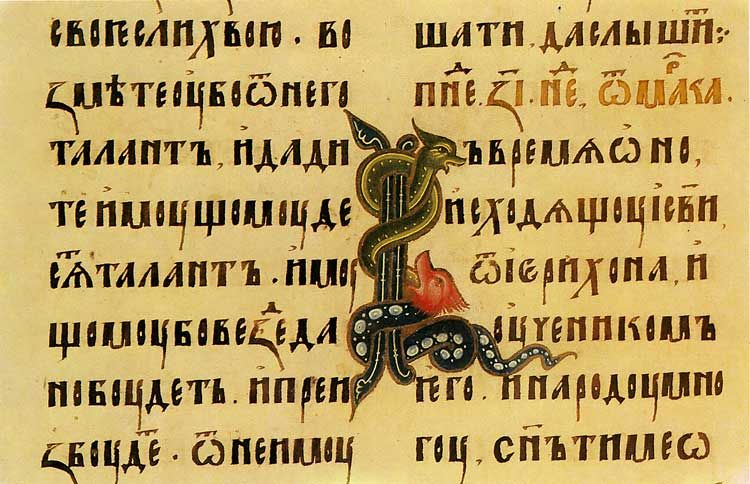

- КИРИ́ЛЛИЦА, -ы, ж. Одна из двух азбук старославянского языка, легшая в основу русского и некоторых других славянских алфавитов.
[По имени славянского просветителя 9 в. Кирилла, составившего славянскую азбуку]
Источник (печатная версия): Словарь русского языка: В 4-х т. / РАН, Ин-т лингвистич. исследований; Под ред. А. П. Евгеньевой. — 4-е изд., стер. — М.: Рус. яз.; Полиграфресурсы, 1999; (электронная версия): Фундаментальная электронная библиотека
- Кири́ллица — термин, имеющий несколько значений:
- белорусского языка (белорусский алфавит),
- болгарского языка (болгарский алфавит),
- македонского языка (македонский алфавит),
- русинского языка/диалекта (русинский алфавит),
- русского языка (русский алфавит),
- сербского языка (сербский кириллический алфавит),
- украинского языка (украинский алфавит),
- черногорского языка (черногорский алфавит),
- а также большинство неславянских языков народов СССР, некоторые из которых ранее имели другие системы письменности (на латинской, арабской или иной основе) и были переведены на кириллицу в конце 1930-х годов. Подробнее см. список языков с алфавитами на основе кириллицы.
После распада СССР от кириллицы к 2016 году уже отказались Молдавия, Азербайджан, Узбекистан и Туркменистан.
Источник: Википедия
- КИРИ́ЛЛИЦА
- одна из двух древних славянских письменностей (азбук), которая легла в основу русского и некоторых других славянских алфавитов ◆ Что вновь изобретённая азбука названа в новейшие времяна Кириллицею — Кирилловскою, ето сделалось только по случаю: в услугах, оказанных обоими братьями Славенам, Мефодий имеет не токмо столько же, сколько и Кирилл, но и ещё более его участия; последний умер очень рано, а Мефодий жил ещё после него, может быть, лет с 30, и честь совершения перевода Библии принадлежит токмо ему.
В начале XVIII в., в общем процессе освобождения от авторитарности церкви, кириллица была заменена гражданским шрифтом, который принял более закругленные очертания. - Кириллица — не шрифт, а система славянского письма, которая существует с конца IX в. и с некоторыми изменениями применяется до нашего времени.
Источник: Викисловарь
- одна из двух древних славянских письменностей (азбук), которая легла в основу русского и некоторых других славянских алфавитов ◆ Что вновь изобретённая азбука названа в новейшие времяна Кириллицею — Кирилловскою, ето сделалось только по случаю: в услугах, оказанных обоими братьями Славенам, Мефодий имеет не токмо столько же, сколько и Кирилл, но и ещё более его участия; последний умер очень рано, а Мефодий жил ещё после него, может быть, лет с 30, и честь совершения перевода Библии принадлежит токмо ему.
Ассоциации к слову «кириллица»
алфавит латынь буквы шрифт словесностьПредложения со словом «кириллица»
- Под каждой арабской цифрой мы видим три различные буквы кириллицы
- Имеет смысл давать вложенным папкам названия на латинице – так можно избежать проблем, которые нередко возникают при чтении нерусифицированной операционной системой шрифтов, написанных кириллицей.
- Текст был написан не славянской кириллицей, не армянским, грузинским, не узбекским или казахским шрифтом, а по-английски.
- (все предложения)
Сочетаемость слова «кириллица»
Понятия со словом «кириллица»
В данном списке представлены языки, которые используют или когда-либо использовали алфавит на основе кириллицы. Большая часть символов кириллицы различных языков присутствует в Юникоде (см. Кириллица в Юникоде).
- Польская кириллица (цырылица) — общее название проектов кириллической азбуки для польского языка. Обычно для записи текстов на польском используют только латиницу. Из-за того, что польский язык является славянским, неоднократно происходили попытки использовать для его записи кириллицу, которая была разработана с учетом особенностей славянских языков и является более популярным алфавитом среди славянских народов.
- Научная транслитерация кириллицы — система передачи букв кириллицы с помощью латинских букв (например, стандарт ISO), применяемая, в основном, в научных изданиях.
- Дополнение к кириллице (англ. Cyrillic Supplement) — десятый блок стандарта Юникод. Содержит устаревшие буквы кириллицы, использовавшиеся в неславянских алфавитах.
- Старорумы́нская кири́ллица(молдавская кириллица, старомолдавская кириллица, влахо-славянская азбука, романокириллица, молдаво-валашское письмо, азбука влахо-молдавских рукописей) использовалась для записи валашского и молдавского языков в Валахии, Трансильвании, Молдавском княжестве. В объединённой Румынии с начала 1860-х годов официально стал использоваться румынский алфавит на латинской основе; в Бессарабии с XIX века — русский алфавит.
Подробнее: Румынская кириллица
Сочетаемость слова «кириллица»
- обычной кириллицей
- с кириллицы на латиницу
- писать кириллицей